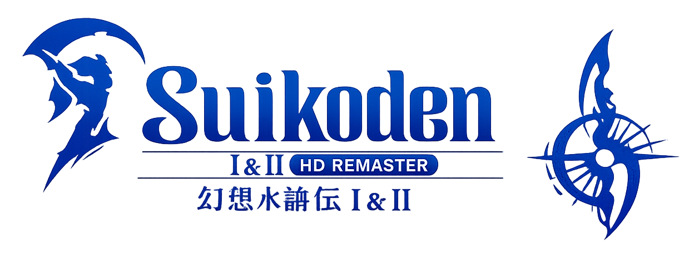

Suikoden Intégral (Remaster)
Une guerre, une armée à bâtir et 108 étoiles à rassembler… cette fois, la Guilde entre dans la légende.
📜 Informations de l'expédition
Origine :
Aventure principale 🏆
Statut :
En sommeil 💤
📅 Début : Janvier 2026
🎮 Type : RPG / Aventure / Stratégie
👥 Participants : MK
📖 Histoire de l'aventure
Deux histoires, deux héros et un destin lié aux guerres qui bouleversent le monde. De conflits politiques en batailles épiques, la Guilde va devoir rassembler ses alliés, découvrir les secrets des 27 True Runes et se battre pour changer le cours de l'Histoire.
🎯 Objectifs de l'expédition
- ⚔️ Rassembler nos forces
- 🏰 Affronter les conflits qui déchirent le royaume
- 🔮 Découvrir les secrets des True Runes
🎬 Souvenirs de l'expédition
Retrouvez les chroniques de cette aventure.